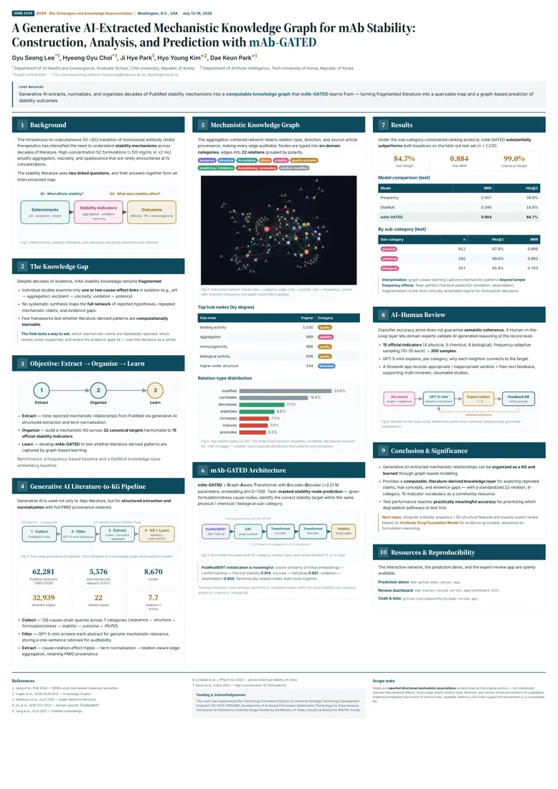
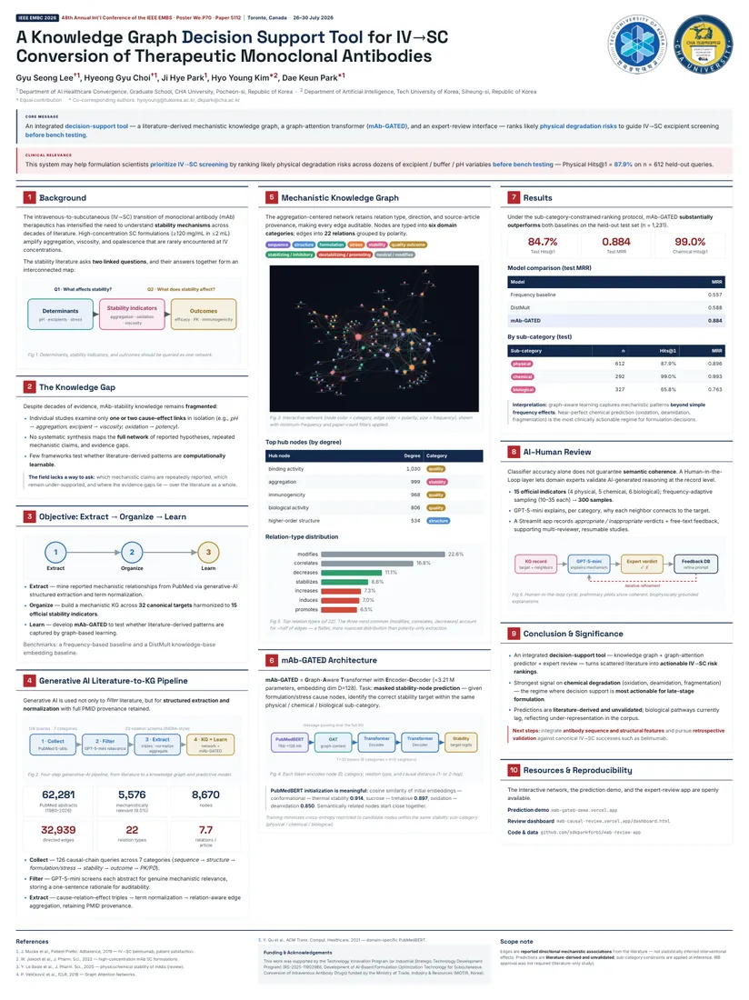

이규성
Gyu-Seong Lee
- 소속
- 차의과학대학교 일반대학원 AI헬스케어융합학과 석사과정
- 연구실
- AIForA Lab 연구원, 지도교수 박대근
- 연구 분야
- 약물·항체 예측 AI, 헬스케어 데이터, 생성형 AI 기반 문헌·뉴스 분석
소식
- 경영학전공 선배특강, ‘AI융합비즈니스인재가 되려면 무엇을 공부해야 하나’
- IEEE EMBC 2026 포스터 발표, 캐나다 토론토
- ISMB 2026 포스터 발표, 미국 워싱턴 D.C.
- 디지털콘텐츠학회논문지 논문 게재
- (주)미들턴 산학 연구 참여: AI 기반 고령자 건강·삶의 질 개선 효과 분석
- PLOS ONE 논문 게재(공동 제1저자)
- 물류학회지 논문 게재(제1저자)
- 산업통상자원부 항체 제형 AI 과제 참여
- AI헬스케어융합학과 석사과정 입학, AIForA Lab 연구원
- 데이터경영학과 졸업
논문
-
PLOS ONE 21(4), 2026. SCIE, 공동 제1저자
-

A Generative AI-Extracted Mechanistic Knowledge Graph for mAb Stability: Construction, Analysis, and Prediction with mAb-GATED
ISMB 2026 포스터, 워싱턴 D.C. 공동 제1저자
-

A Knowledge Graph Decision Support Tool for IV to SC Conversion of Therapeutic Monoclonal Antibodies
IEEE EMBC 2026 포스터, 토론토. 공동 제1저자
-
신뢰 지향 아바타 챗봇의 설계와 사용자 인식: 전공 선택과 진로 상담 사례
디지털콘텐츠학회논문지 27(7), 2026. KCI
-
MZ세대 소비자의 SNS 능동적 참여도를 높이기 위한 인스타그램 및 유튜브 활용 전략: 편의점 3사를 중심으로
고객만족경영연구, 2021. KCI
진행 중
- 타크롤리무스 혈중농도 예측: 머신러닝과 베이지안 약동학 비교(제1저자, 투고 준비)
- mAb-GATED 전체 논문(공동 제1저자)
- 석사학위논문: 다중과제 그래디언트 부스팅을 이용한 약물 청소율·분포용적 동시 예측
과제
- AI 기반 제형 최적화를 통한 정맥주사 항체의약품의 피하주사 전환 제형 기술 개발 산업통상자원부 기술혁신사업, 참여연구자
- AI 기반 고령자 건강·삶의 질 개선 효과 분석 연구 (주)미들턴
- 공무원 인건비·연금 재정전망 모형 연구 국회예산정책처
- 쇼핑엔티 이용자 로그 분석을 통한 실질적 마케팅 전략 및 AI 솔루션 탐색 (주)티알엔
- 새마을금고 예금잔액 추정 모형 개발 및 성과분석 모형 구축 새마을금고중앙회
- 모바일 로그데이터 기반 고객여정분석 연구 (주)티알엔
- 비선형 추세 수요추정 방법론 사례분석 한국개발연구원(KDI)
- 사립학교 교직원연금 가입자 전망모형 개선
- 조세지출 일몰연장 법률안 비용추계 자동화(R Shiny) 국회예산정책처
- 입학처 종단 연구 데이터 분석 차의과학대학교
- 의정부 용현 산업단지 발전전략
만든 것
- 경진대회 AI 친구 봇 16개2026 비즈니스모델개발 경진대회 16팀의 봇을 한곳에 모아 복구하고 운영
- 항체 안정성 지식그래프논문에서 생성형 AI로 뽑은 인과관계를 연결한 네트워크
- 공공 공고 트래커나라장터·기업마당 등 공고를 매일 자동 수집, 2026년 4월부터 작동
- 한국 거시경제 대시보드ECOS·KOSIS 시계열 102개를 매주 자동 수집
- 졸업요건 자가진단 도구학과 졸업요건 2013-2026년판 데이터화, 학내 전용
- hwpx 스킬, 뉴스 연구 스킬한글 문서 자동화와 뉴스 수집·분류를 AI 에이전트용 스킬로 공개
교육
- 수업 실습 환경 구축: AI융합프로젝트II, 언론과PR글쓰기, 상품분석 PBL(수강생 55명)
- AX Studio 강의 영상과 안내서: 내 포털 만들고 게시하기
- 항체 안정성 지식그래프 교육 패키지: 3차시 교안, Colab 실습
수상
- 학과 경영사례·데이터분석대회 2등
- 제4회 교양 교과목 연구개발공모전 최우수상
- 학과 경영사례·데이터분석대회 3등
- 경영혁신 연구논문 및 사례연구 대학(원)생 공모전 대상 KMA회남재단·한국능률협회컨설팅
- 학과 경영사례·데이터분석대회 1등
- 농촌재능나눔 대학생 활동지원사업 선정
활동·자격
- 데이터경영학과 학생회
- 합창단 차콰이어
- 봉사동아리 채움 단장(2021), 부단장(2022)
- ADsP, ITQ OA Master, DIAT 스프레드시트, 빅데이터분석기사 필기